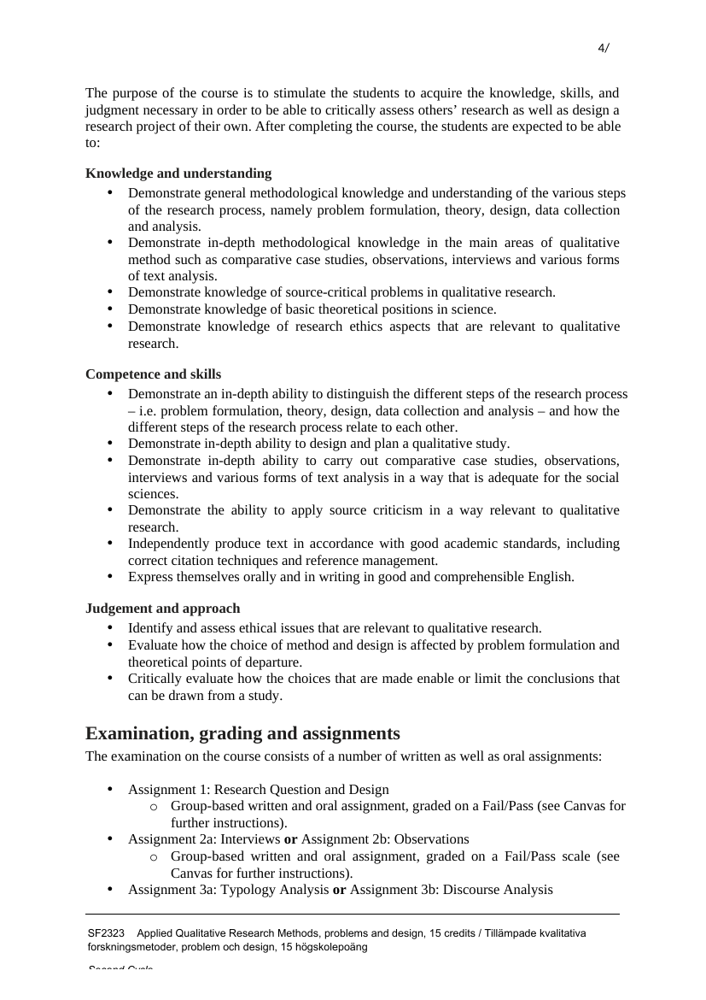
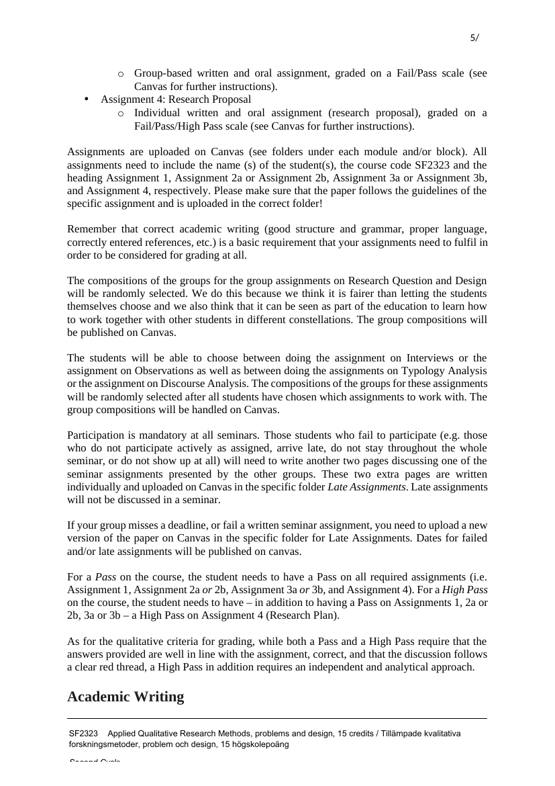

Belägg för examinationsmatrisens markeringar · Källa: kursguide H25
Tabellen nedan styrker examinationsmatrisens markeringar för SF2323 mot kursguide H25. Kursen är uppdelad i tre moduler och examineras genom fyra uppgifter: en grupp-uppgift om Research Question and Design, två grupp-uppgifter om kvalitativa metoder (val mellan intervjuer/observationer respektive typologianalys/diskursanalys) och en avslutande individuell research proposal.
| Examinationsform (per matris) | Citat ur kursguide H25 | Källa |
|---|---|---|
| PM / forskningsplan | Module 3 sums up in a Research proposal, which is an individual oral as well as written assignment, graded on a Fail/Pass/High Pass scale. The research plan should be maximum 4000 words, exclusive of the reference list. Assignment 4: Research Proposal — Individual written and oral assignment (research proposal), graded on a Fail/Pass/High Pass scale. |
Sid 4–5 — Se sida → |
| Seminarieinlämning / memo | Assignment 1: Research Question and Design — Group-based written and oral assignment, graded on a Fail/Pass. Assignment 2a: Interviews or Assignment 2b: Observations — Group-based written and oral assignment. Assignment 3a: Typology Analysis or Assignment 3b: Discourse Analysis — Group-based written and oral assignment. |
Sid 5 — Se sida → |
| Muntlig presentation | Assignments are discussed in teacher-led small group seminars. Module 3 sums up in a Research proposal, which is an individual oral as well as written assignment … (Assignments 1, 2a/2b, 3a/3b are all) Group-based written and oral assignment, graded on a Fail/Pass scale. |
Sid 5 — Se sida → |
| Seminariedeltagande | Participation is mandatory at all seminars. Those students who fail to participate (e.g. those who do not participate actively as assigned, arrive late, do not stay throughout the whole seminar, or do not show up at all) will need to write another two pages discussing one of the seminar assignments presented by the other groups. |
Sid 5 — Se sida → |

Sida 4 — Module 3 (Research proposal) + Learning outcomes
Sida 5 — Examination, grading and assignments (1–4)